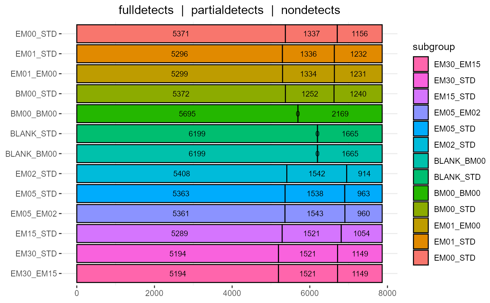

#> Read: ~/importomicscache/datasets/fukuda20/fukuda20.proteingroups.txt
#> Rm 376 features with missing 'feature_id' values
#> Prepare samples
#> Prepare samples
#> Standardize snames: LFQ intensity dpt30_1 -> dpt30_1
#> Read design (update if required!): ~/importomicscache/datasets/fukuda20/fukuda20.proteingroups.LFQ.intensity.design.txt
#> Log2 transform
#> Replace 0 -> NA for 15654/41112 values (in 3998/6852 features and 6/6 samples)
#> Log2 transform
#> Filter features
#> Retain 6735/6852 features: ~Reverse != "+"
#> Retain 6692/6735 features: contaminant != '+'
#> Retain 6583/6692 features: non-zero, non-NA, and non-NaN for some sample
#> Filter 4428/6583 features: expr > 0 for at least two samples in some subgroup
#> Transform exprs
#> Filter 4428/4428 features: expr > 0 for at least two samples in some subgroup
#> Impute systematic nondetects for 806/4428 features in 6/6 samples
#> Add PCA
#> Retain 4428/4428 features: non-zero, non-NA, and non-NaN for some sample
#> Run limma
#> Retain 6/6 samples: ~!is.na(~subgroup)
#> Read: ~/importomicscache/datasets/billing16/billing16.proteingroups.txt
#> Prepare samples
#> Prepare samples
#> Standardize snames: Ratio M/L normalized E(L).EM(M).BM(H).R1 -> E(L).EM(M).BM(H).R1{M/L}
#> Demultiplex snames: E(L).EM(M).BM(H).R1{M/L} -> EM_E.R1
#> Read design (update if required!): ~/importomicscache/datasets/billing16/billing16.proteingroups.Ratio.normalized.design.txt
#> Log2 transform
#> Replace NaN -> NA for 12544/77643 values (in 2226/8627 features and 9/9 samples)
#> Log2 transform
#> Invert subgroups EM_E, BM_E, BM_EM
#> exprs : -3.8 -> 3.8
#> subgroups: EM_E -> E_EM
#> sampleids: EM_E.R1 -> E_EM.R1
#> Order on subgroup
#> Filter features
#> Retain 8528/8627 features: ~Reverse != "+"
#> Retain 8408/8528 features: contaminant != '+'
#> Retain 7877/8408 features: non-zero, non-NA, and non-NaN for some sample
#> Filter 7165/7877 features: expr != 0 for at least two samples in some subgroup
#> Transform exprs
#> Add PCA
#> Retain 7165/7165 features: non-zero, non-NA, and non-NaN for some sample
#> Run limma
#> Retain 9/9 samples: ~!is.na(~subgroup)
# Unnormalized Intensities: specify quantity
object <- read_proteingroups(file, quantity = 'Intensity labeled')
#> Read: ~/importomicscache/datasets/billing16/billing16.proteingroups.txt
#> Prepare samples
#> Prepare samples
#> Standardize snames: Intensity L E(L).EM(M).BM(H).R1 -> E(L).EM(M).BM(H).R1{L}
#> Demultiplex snames: E(L).EM(M).BM(H).R1{L} -> E.R1
#> Read design (update if required!): ~/importomicscache/datasets/billing16/billing16.proteingroups.Intensity.labeled.design.txt
#> Log2 transform
#> Replace 0 -> NA for 5454/77643 values (in 1287/8627 features and 9/9 samples)
#> Log2 transform
#> Filter features
#> Retain 8528/8627 features: ~Reverse != "+"
#> Retain 8408/8528 features: contaminant != '+'
#> Retain 8373/8408 features: non-zero, non-NA, and non-NaN for some sample
#> Filter 7996/8373 features: expr > 0 for at least two samples in some subgroup
#> Transform exprs
#> Filter 7996/7996 features: expr > 0 for at least two samples in some subgroup
#> Impute systematic nondetects for 8/7996 features in 9/9 samples
#> Add PCA
#> Retain 7996/7996 features: non-zero, non-NA, and non-NaN for some sample
#> Run limma
#> Retain 9/9 samples: ~!is.na(~subgroup)
#> Read: ~/importomicscache/datasets/billing19/billing19.proteingroups.txt
#> Rm 70 features with missing 'feature_id' values
#> Prepare samples
#> Prepare samples
#> Standardize snames: Ratio M/L normalized STD(L).EM00(M).EM01(H).R1 -> STD(L).EM00(M).EM01(H).R1{M/L}
#> Demultiplex snames: STD(L).EM00(M).EM01(H).R1{M/L} -> EM00_STD.R1
#> Uniquify snames: BM00_STD.R10 -> BM00_STD.R10ML (for 2/33 snames)
#> Read design (update if required!): ~/importomicscache/datasets/billing19/billing19.proteingroups.Ratio.normalized.design.txt
#> Retain 21/33 samples: ~subgroup %in% select_subgroups
#> Log2 transform
#> Replace NaN -> NA for 77204/205338 values (in 5423/9778 features and 21/21 samples)
#> Log2 transform
#> Filter features
#> Retain 9566/9778 features: ~Reverse != "+"
#> Retain 9470/9566 features: contaminant != '+'
#> Retain 7864/9470 features: non-zero, non-NA, and non-NaN for some sample
#> Filter 7094/7864 features: expr != 0 for at least two samples in some subgroup
#> Transform exprs
#> Add PCA
#> Retain 7094/7094 features: non-zero, non-NA, and non-NaN for some sample
#> Run limma
#> Retain 21/21 samples: ~!is.na(~subgroup)

#> Read: ~/importomicscache/datasets/billing19/billing19.proteingroups.txt
#> Rm 70 features with missing 'feature_id' values
#> Prepare samples
#> Prepare samples
#> Standardize snames: Ratio M/L normalized STD(L).EM00(M).EM01(H).R1 -> STD(L).EM00(M).EM01(H).R1{M/L}
#> Demultiplex snames: STD(L).EM00(M).EM01(H).R1{M/L} -> EM00_STD.R1
#> Uniquify snames: BM00_STD.R10 -> BM00_STD.R10ML (for 2/33 snames)
#> Read design (update if required!): ~/importomicscache/datasets/billing19/billing19.proteingroups.Ratio.normalized.design.txt
#> Retain 21/33 samples: ~subgroup %in% select_subgroups
#> Log2 transform
#> Replace NaN -> NA for 77204/205338 values (in 5423/9778 features and 21/21 samples)
#> Log2 transform
#> Read: ~/importomicscache/datasets/billing19/billing19.phosphosites.txt
#> Prepare samples
#> Standardize snames: Ratio M/L normalized STD(L).EM00(M).EM01(H).R1 -> STD(L).EM00(M).EM01(H).R1{M/L}
#> Demultiplex snames: STD(L).EM00(M).EM01(H).R1{M/L} -> EM00_STD.R1
#> Uniquify snames: BM00_STD.R10 -> BM00_STD.R10ML (for 2/33 snames)
#> Read design (update if required!): ~/importomicscache/datasets/billing19/billing19.proteingroups.Ratio.normalized.design.txt
#> Retain 21/33 samples: ~subgroup %in% select_subgroups
#> Log2 transform
#> Replace NaN -> NA for 11144/296226 values (in 1290/14106 features and 21/21 samples)
#> Log2 transform
#> Filter features
#> Retain 13968/14106 features: ~Reverse != "+"
#> Retain 13826/13968 features: contaminant != '+'
#> Retain 9690/13826 features: non-zero, non-NA, and non-NaN for some sample
#> Filter 7062/9690 features: expr != 0 for at least two samples in some subgroup
#> Retain 6027/7062 features: ~`Localization prob` >= min_localization_prob
#> Add occupancies(phospho) = exprs(phospho) - exprs(proteins)
#> Aggregate function missing, defaulting to 'length'
#> Transform exprs
#> Add PCA
#> Retain 6027/6027 features: non-zero, non-NA, and non-NaN for some sample
#> Run limma
#> Retain 21/21 samples: ~!is.na(~subgroup)
#> class: SummarizedExperiment
#> dim: 6027 21
#> metadata(8): analysis file ... contrastdefs limma
#> assays(2): exprs occupancies
#> rownames(6027): 0 1 ... 14093 14101
#> rowData names(13): feature_id feature_name ... F F.p
#> colnames(21): EM00_STD.R1 EM01_STD.R1 ... EM15_STD.R9 EM30_STD.R9
#> colData names(5): sample_id subgroup replicate pca1 pca2
#> feature_id feature_name uniprot
#> 0 0 RBM47 D6R9D6;A0AV96-2;B7Z8Z7;A0AV96;D6RBS9;D6REZ6
#> 1 1 TTC26 A0AVF1-3;A0AVF1;B7Z2T3;B7Z6R6;A0AVF1-2
#> 3 3 UBA6 A0AVT1;A0AVT1-2
#> Protein names
#> 0 RNA-binding protein 47
#> 1 Tetratricopeptide repeat protein 26
#> 3 Ubiquitin-like modifier-activating enzyme 6
#> Read: ~/importomicscache/datasets/billing19/billing19.proteingroups.txt
#> Rm 70 features with missing 'feature_id' values
#> Prepare samples
#> Prepare samples
#> Standardize snames: Intensity L STD(L).EM00(M).EM01(H).R1 -> STD(L).EM00(M).EM01(H).R1{L}
#> Demultiplex snames: STD(L).EM00(M).EM01(H).R1{L} -> STD.R1
#> Uniquify snames: BM00.R10 -> BM00.R10M (for 2/33 snames)
#> Read design (update if required!): ~/importomicscache/datasets/billing19/billing19.proteingroups.Intensity.labeled.design.txt
#> Log2 transform
#> Replace 0 -> NA for 73894/322674 values (in 4241/9778 features and 33/33 samples)
#> Log2 transform
#> Filter features
#> Retain 9566/9778 features: ~Reverse != "+"
#> Retain 9470/9566 features: contaminant != '+'
#> Retain 9056/9470 features: non-zero, non-NA, and non-NaN for some sample
#> Filter 8696/9056 features: expr > 0 for at least two samples in some subgroup
#> Load fasta file
#> Extract REVIEWED: 0=trembl, 1=swissprot
#> Extract ENTRYNAME
#> Extract (sequence) VERSION
#> Extract EXISTENCE: 1=protein, 2=transcript, 3=homology, 4=prediction, 5=uncertain, NA=isoform
#> Extract GENES
#> Extract ORGID
#> Extract ORGNAME
#> Extract PROTEIN-NAMES
#> Simplify proteingroups
#> Drop inferior existences
#> Drop trembl when swissprot available
#> Drop fragments when full seqs available
#> Collapse isoforms and paralogs
#> Transform exprs
#> Filter 8696/8696 features: expr > 0 for at least two samples in some subgroup
#> Impute systematic nondetects for 1761/8696 features in 33/33 samples
#> Add PCA
#> Retain 8696/8696 features: non-zero, non-NA, and non-NaN for some sample
#> Run limma
#> feature_id feature_name uniprot canonical
#> 0 0 RBM47 A0AV96-2;A0AV96 A0AV96
#> 1 1 TTC26 A0AVF1-3;A0AVF1;A0AVF1-2 A0AVF1
#> 2 2 TMEM129 A0AVI4-2;A0AVI4 A0AVI4